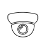
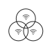

Агро-интеграция
It not only supports the latest 4G LTE mobile communication standard but also 3G as well as 2G as the fallback solution. In addition to the mobile RTK functionality, the modem can also be used in parallel as a WLAN hotspot to connect with your mobile devices.
Беспроводной 4G LTE интернет
Усиление голосовой GSM связи

Система видеонаблюдения

WiFi сеть на большие площади
Беспроводные системы безопасности